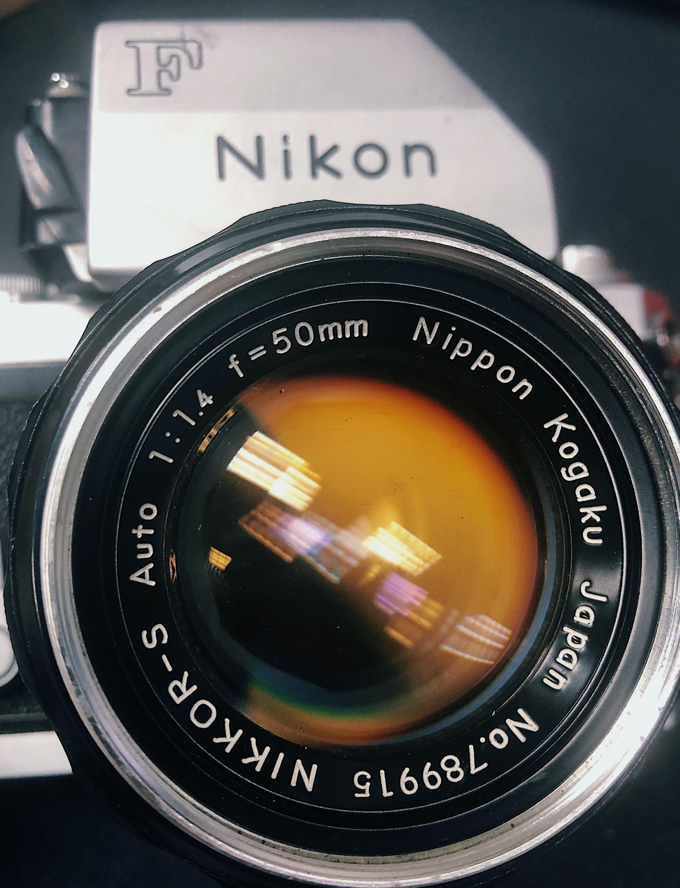
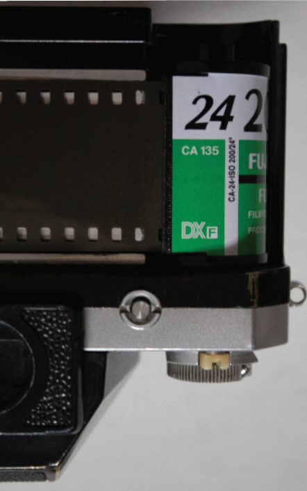
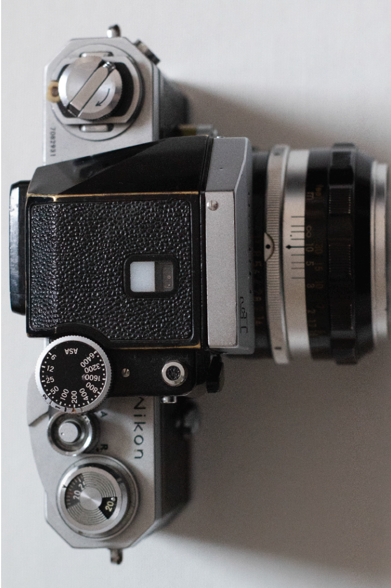
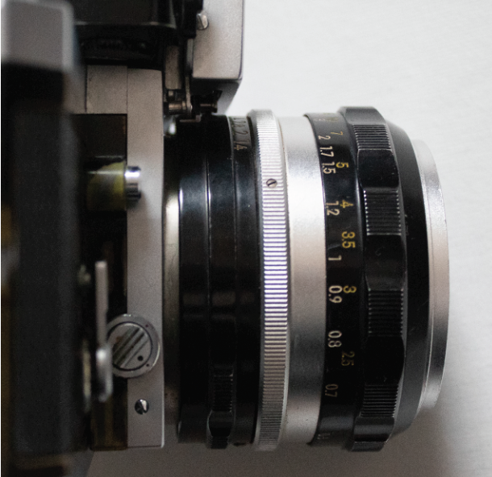
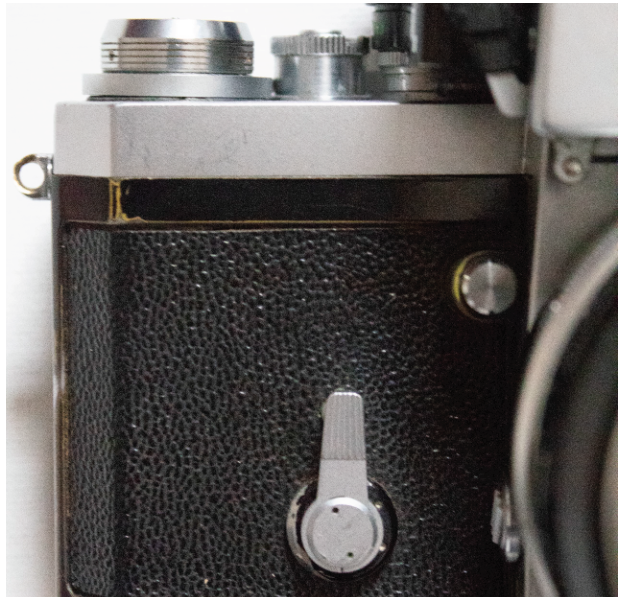
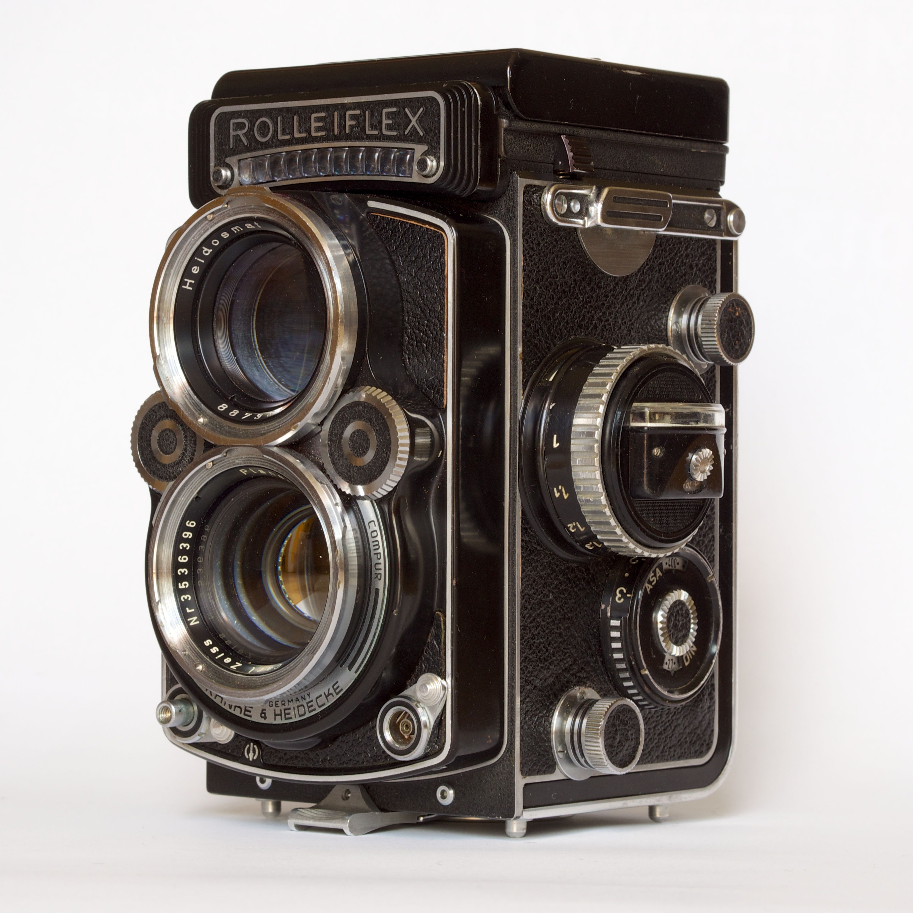

Nikon F-1
The Nikon F camera, introduced in April 1959, was Nikon's first SLR camera. It was one of the most advanced cameras of its day. Although many of the concepts had already been introduced elsewhere, it was revolutionary in that it was the first to combine them all in one camera.
More Details





Rolleiflex TLR
The Rolleiflex TLR film cameras were known for their exceptional build quality, compact size, modest weight, superior optics, durability, simplicity, reliable mechanics and bright viewfinders. The high-quality 7.5 cm focal length lenses, manufactured by Zeiss and Schneider, allowed for a smaller, lighter, more compact camera than their imitators.